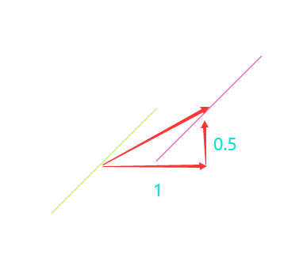
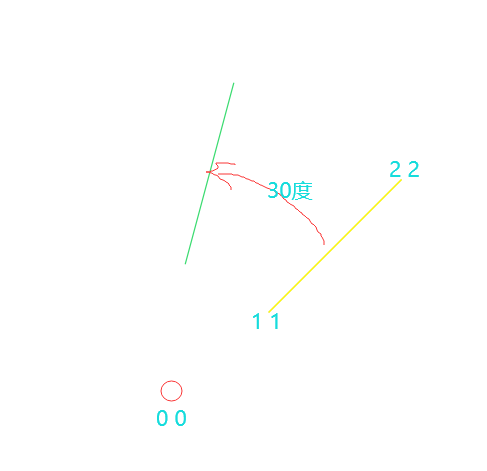
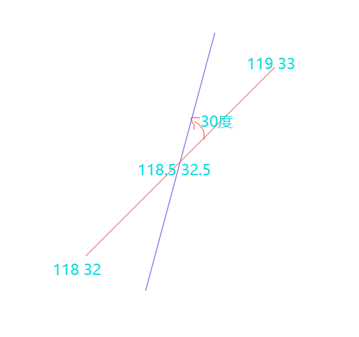
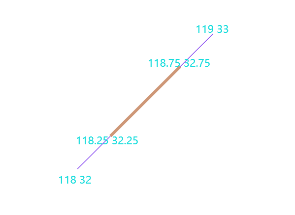
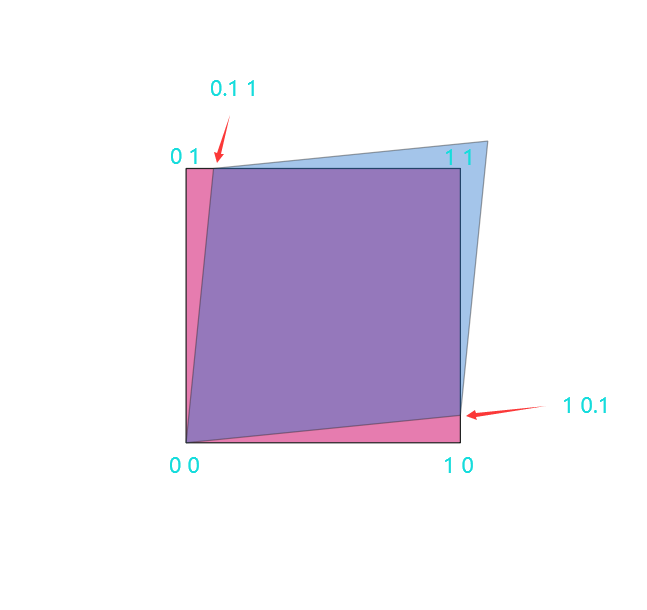
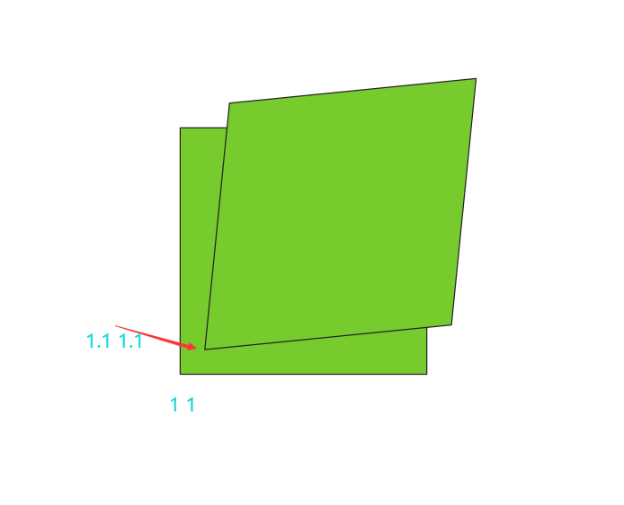
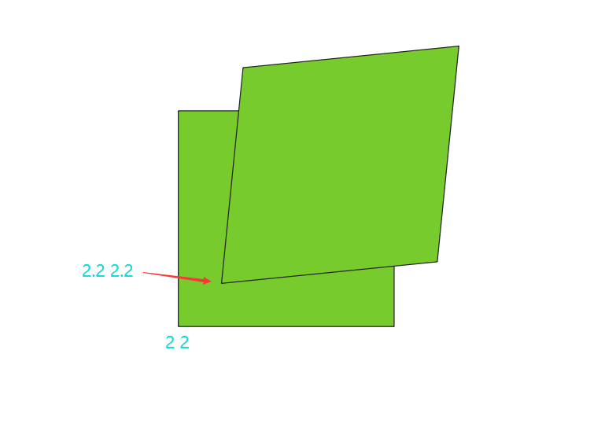
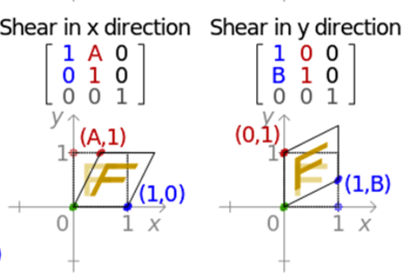

ST_Affine
方法功能描述
通过该函数将一个图形进行仿射变换，转换成另一个图形，通常用于坐标系转换的场景。例如已知一批EPSG:4326坐标系的图形，需要叠加到一个自定义的底图上，该底图所有地物都是基于EPSG:4326坐标系旋转平移的，如果需要把数据正确叠加上去，需要对自己的数据也进行旋转平移后才能叠加，使用该函数可以实现这样的需求。
函数定义
二维：
geometry ST_Affine(geometry geomA, float a, float b, float d, float e, float xoff, float yoff);
代表转换矩阵：
/ a b 0 xoff \ / a b xoff \
| d e 0 yoff | 公式简化为=> | d e yoff |
| 0 0 1 0 | \ 0 0 1 /
\ 0 0 0 1 /
顶点转换公式：
x' = a*x + b*y + xoff
y' = d*x + e*y + yoff
z' = z
对于二维转换来说，z是不存在或者存在不做任何处理的，所以z' = z.
注意：xoff，yoff代表xy轴的平移量，而abde参数反映了二维图形的旋转缩放等变化。
三维：
geometry ST_Affine(geometry geomA, float a, float b, float c, float d, float e, float f, float g, float h, float i, float xoff, float yoff,
float zoff);
代表转换矩阵：
/ a b c xoff \
| d e f yoff |
| g h i zoff |
\ 0 0 0 1 /
顶点转换公式：
x' = a*x + b*y + c*z + xoff
y' = d*x + e*y + f*z + yoff
z' = g*x + h*y + i*z + zoff
注意：xoff，yoff，zoff代表xyz轴的平移量，而abcdefghi参数反映了三维图形的旋转缩放等变化。
应用示例
说明：该函数能大量操作三维图形，但是因作图不是很方便，作者仅仅会添加二维示意图。
平移
将输入二维线向x,y轴分别平移1,0.5，平移矩阵参数：
/ 1 0 1 \
| 0 1 0.5 |
\ 0 0 1 /
则套入二维的仿射变换函数：ST_Affine(geometry geomA, float a, float b, float d, float e, float xoff, float yoff)，那么a=1,b=0,xoff=1,d=0,e=1,yoff=0.5。

二维：
select st_astext(geom) geom1,st_astext(ST_Affine(geom, 1, 0, 0, 1, 1, 0.5)) geom2
from (SELECT ST_GeomFromEWKT('LINESTRING(118 32, 119 33)') As geom) as foo;
geom1 | geom2
---------------------------------------------------------
LINESTRING(118 32,119 33) | LINESTRING(119 32.5,120 33.5)
使用二维的ST_Affine，等同于对三维的z不处理，如下：
select st_astext(geom) geom1,st_astext(ST_Affine(geom, 1, 0, 0, 1, 1, 0.5)) geom2
from (SELECT ST_GeomFromEWKT('LINESTRING(118 32 10, 119 33 20)') As geom) as foo;
geom1 | geom2
---------------------------------------------------------
LINESTRING(118 32 10,119 33 10) | LINESTRING(119 32.5 10,120 33.5 20)
z轴没有发生任何变化。
使用三维ST_Affine函数，将z也平移1，转换矩阵：
/ 1 0 0 1 \
| 0 1 0 0.5 |
| 0 0 1 1 |
\ 0 0 0 1 /
则套入三维的仿射变换函数：ST_Affine(geometry geomA, float a, float b, float c, float d, float e, float f, float g, float h, float i, float xoff, float yoff, float zoff)，那么a=1,b=0,c=0,xoff=1,d=0,e=1,f=0,yoff=0.5,g=0,h=0,i=1,zoff=1。
select st_astext(geom) geom1,st_astext(ST_Affine(geom, 1, 0,0, 0, 1,0,0,0,1, 1, 0.5,1)) geom2
from (SELECT ST_GeomFromEWKT('LINESTRING(118 32 10, 119 33 20)') As geom) as foo;
geom1 | geom2
---------------------------------------------------------
LINESTRING(118 32 10,119 33 20) | LINESTRING(119 32.5 11,120 33.5 21)
z轴从10,20分别平移到了11，21
结论：二维ST_Affine只是三维ST_Affine函数的一个特殊形式。
旋转
将输入二维线旋转30度(pi()*30.0/180)，绕原点转换矩阵参数：
/ cos(pi()/6) -sin(pi()/6) 0 \
| sin(pi()/6) cos(pi()/6) 0 |
\ 0 0 1 /
执行转换： 
select st_astext(geom) geom1,st_astext(ST_Affine(geom, cos(pi()/6), -sin(pi()/6), sin(pi()/6), cos(pi()/6),0,0)) geom2
from (SELECT ST_GeomFromEWKT('LINESTRING(1 1, 2 2)') As geom) as foo;
geom1 | geom2
-------------------------------------------------------------------------------------------------------------------
LINESTRING(1 1,2 2) | LINESTRING(0.366025403784439 1.36602540378444,0.732050807568878 2.73205080756888)
名词解析：
原点：二维是指向0 0的，如图可清晰可见。
旋转角度：旋转中心点默认是原点，旋转角度为正，逆时针旋转，旋转角度为负，顺时针旋转。
组合
旋转后的效果，与很多人想的不一样，因为旋转是基于原点0 0 旋转的，很多人需要的数据是基于原图形的中心点原地旋转。这样的操作实际上是一个 旋转+平移的组合效果，即将旋转后的图形，平移到原图形的中心点处：
对二维图形LINESTRING(118 32, 119 33)原地旋转（其实就是绕自己的中心点x=118.5 y=32.5旋转），转换矩阵参数：
/ cos(pi()/6) -sin(pi()/6) x-x*cos(pi()/6)+y*sin(pi()/6) \
| sin(pi()/6) cos(pi()/6) y-x*sin(pi()/6)-y*cos(pi()/6) |
\ 0 0 1 /

select st_astext(geom) geom1,st_astext(ST_Affine(geom, cos(pi()/6), -sin(pi()/6), sin(pi()/6), cos(pi()/6),118.5-118.5*cos(pi()/6)+32.5*sin(pi()/6),32.5-118.5*sin(pi()/6)-32.5*cos(pi()/6))) geom2
from (SELECT ST_GeomFromEWKT('LINESTRING(118 32, 119 33)') As geom) as foo;
geom1 | geom2
-------------------------------------------------------------------------------------------------------------------
LINESTRING(118 32 10,119 33 20) | LINESTRING(118.316987298108 31.8169872981078,118.683012701892 33.1830127018922)
如果我们分解看，先旋转，再平移同样得到这样的效果：
--旋转
select st_astext(ST_Affine(geom, cos(pi()/6), -sin(pi()/6), sin(pi()/6), cos(pi()/6),0,0)) geom
from (SELECT ST_GeomFromEWKT('LINESTRING(118 32, 119 33)') As geom) as foo;
geom
-------------------------------------------------------------------------------------------------------------------
LINESTRING(86.1909976465638 86.712812921102,86.5570230503482 88.0788383248865)
--平移
select st_astext(ST_Affine(geom, 1, 0, 0, 1, 118.5-118.5*cos(pi()/6)+32.5*sin(pi()/6),32.5-118.5*sin(pi()/6)-32.5*cos(pi()/6))) geom
from (SELECT ST_GeomFromEWKT('LINESTRING(86.1909976465638 86.712812921102,86.5570230503482 88.0788383248865)') As geom) as foo;
geom
-------------------------------------------------------------------------------------------------------------------
LINESTRING(118.316987298108 31.8169872981077,118.683012701892 33.1830127018923)
最终结果与组合示例sql中的geom2值相等。
缩放
对图形缩放的话，尤其矢量，在gis中应用场景很小。
对xy轴缩小0.5，转换矩阵参数：
/ sx 0 0 \
| 0 sy 0 |
\ 0 0 1 /
转换sql：
select st_astext(geom) geom1,st_astext(ST_Affine(geom, 0.5,0, 0, 0.5,0,0)) geom2
from (SELECT ST_GeomFromEWKT('LINESTRING(118 32, 119 33)') As geom) as foo;
geom1 | geom2
------------------------------------------------------------------------
LINESTRING(118 32, 119 33) | LINESTRING(59 16,59.5 16.5)
结论：这个scale也是基于原点去计算的，所以两个图形相差比较远。
通过缩放再平移，也就是平移到原图形的中心点处，实现原地缩放，转换矩阵参数：
/ sx 0 118.5/2 \
| 0 sy 32.5/2 |
\ 0 0 1 /

select st_astext(geom) geom1,st_astext(ST_Affine(geom, 0.5,0, 0, 0.5,59.25,16.25)) geom2
from (SELECT ST_GeomFromEWKT('LINESTRING(118 32, 119 33)') As geom) as foo;
geom1 | geom2
-------------------------------------------------------------------
LINESTRING(118 32, 119 33) | LINESTRING(118.25 32.25,118.75 32.75)
剪切
剪切变换（Shear）其实对gis矢量数据来说也很少用，简单做个介绍。
不考虑平移的话，剪切变换转换矩阵：
/ 1 shx 0 \
| shy 1 0 |
\ 0 0 1 /
示例sql： 
select st_astext(geom) geom1,st_astext(ST_Affine(geom, 1,0.1, 0.1, 1,0,0)) geom2
from (SELECT ST_GeomFromEWKT('Polygon((0 0, 0 1,1 1,1 0,0 0))') As geom) as foo;
geom1 | geom2
-------------------------------------------------------------------
POLYGON((0 0,0 1,1 1,1 0,0 0)) | POLYGON((0 0,0.1 1,1.1 1.1,1 0.1,0 0))
说明：shx，shy其实不是很清楚，看着上图的结果，有点感觉，但是不是很清楚，我们使用更多的例子说明，先将最小点从0 0平移到1 1： 
select st_astext(geom) geom1,st_astext(ST_Affine(geom, 1,0.1, 0.1, 1,0,0)) geom2
from (SELECT ST_GeomFromEWKT('Polygon((1 1, 1 2,2 2,2 1,1 1))') As geom) as foo;
geom1 | geom2
------------------------------------------------------------------------------------
Polygon((1 1, 1 2,2 2,2 1,1 1)) | POLYGON((1.1 1.1,1.2 2.1,2.2 2.2,2.1 1.2,1.1 1.1))
最小点从0 0平移到2 2： 
select st_astext(geom) geom1,st_astext(ST_Affine(geom, 1,0.1, 0.1, 1,0,0)) geom2
from (SELECT ST_GeomFromEWKT('Polygon((2 2, 2 3,3 3,3 2,2 2))') As geom) as foo;
geom1 | geom2
------------------------------------------------------------------------------------
POLYGON((2 2,2 3,3 3,3 2,2 2)) | POLYGON((2.2 2.2,2.3 3.2,3.3 3.3,3.2 2.3,2.2 2.2))
结论：剪切变换计算也是基于原点0 0计算的，数据越大，两个图形剪切后就会相隔越远。shx，shy可以用下面的示意图表示： 
扩展说明
gis中常用的旋转平移缩放使用ST_Affine函数都能实现，高级变换只能使用ST_Affine函数。但是ST_Affine函数偏底层算法，尤其矩阵参数不容易记住，因此，所有的前端api还是服务端或者数据库端，都为应用者封装了一些新的api，在postgis中对应关系如下：
- ST_Affine旋转对应封装后的ST_Rotate函数。
- ST_Affine平移对应封装后的ST_Translate函数。
- ST_Affine缩放对应封装后的ST_Scale函数。
封装函数只是为了便于开发，本质其实还是对ST_Affine函数的封装而已。
但是封装后的gis函数和ST_Affine函数有些区别：
- 当只对图形进行一次操作，如仅仅平移或仅仅旋转，使用ST_Translate或ST_Rotate函数更方便直接，在效率上，封装函数与ST_Affine函数一样。
- 当对图形进行多次变换，例如某个场景既要平移，也要旋转（既要平移也要旋转也有单独的封装函数，这里只是故意单独作反例说明），使用封装函数方式：ST_Rotate(ST_Translate(geom))，是两个函数叠加使用，也就是一个图形计算了两次；而使用ST_Affine仅仅计算一次。也就是在多次变换这种操作，数据量又特别大，封装函数导致cpu放大，效率低，而ST_Affine函数不存在这个问题。
- 封装函数只能实现简单的变换操作，使用简单；高级变换如剪切变换都只能使用ST_Affine函数实现，使用抽象点。